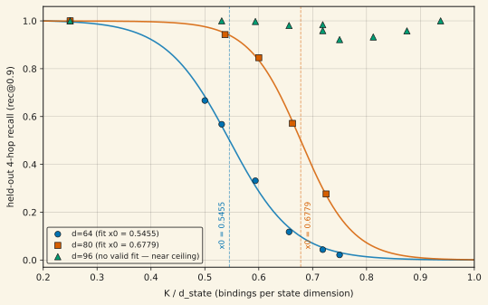

How many key→value bindings can a trained d × d fast-weight state actually support? For a single-layer DeltaNet trained on associative recall with K bindings per episode, held-out 4-hop recall collapses along a clean logistic curve in the capacity ratio K/d. The collapse midpoint x₀ is 0.5455 (CI [0.5385, 0.5513]) at d = 64 and 0.6779 (CI [0.6683, 0.6867]) at d = 80. The pre-registered null was ratio-invariance — the same midpoint recurring at every d, band [0.4745, 0.6165]; the d = 80 interval sits entirely above it. Tolerated capacity per state dimension rises with dimension: raw capacity grows faster than linearly in d. At d = 96 there is no measurable cliff anywhere in the tested window — recall stays near ceiling through K/d = 0.9375 — and the midpoint is unlocalizable with this instrument (100% of bootstrap fits degenerate). The near-ceiling fine structure at d = 96 is instrument-limited, not settled. Preprint in preparation.
01Setup
The model is a single-head, single-layer DeltaNet (chunked delta-rule kernel) whose entire memory is one d_state × d_state matrix updated as St = St−1(I − βt kt kt⊤) + βt vt kt⊤. Episodes draw K entity bindings from a pool of 107 trainable entities — more entities than state dimensions, so the anchor table is non-orthogonal by the Welch bound at every d tested. The metric is rec@0.9 on held-out compositional legs at hop depth 4: the fraction of recoveries whose continuous cosine similarity against the true value exceeds 0.9. Recovery is graded continuously, never by argmax over a codebook — the strictness matters, because argmax decoding lets a rank-1 state fake ≈d associations.
x₀ is the midpoint of a logistic fit h4(x) = L / (1 + exp((x − x₀)/w)) to the (K/d, recall) points at fixed d — the capacity ratio at which held-out recall crosses half its ceiling. Fits carry 4,000-resample bootstrap CIs with a ≤10% degeneracy admission bar.
02The result

The pre-registered null was ratio-invariance: if capacity is linear in d, the collapse midpoint should recur at the same ratio, band [0.4745, 0.6165] around the d = 64 value. The d = 80 confidence interval excludes that band entirely. A d = 80 state does not just hold 25% more bindings than a d = 64 state — it holds 25% more per unit of ratio, i.e. critical capacity Kcrit grows super-linearly in d in this regime.
03The d = 96 window, honestly
The d = 96 reading is no monotonic decline through K/d = 0.9375 — not "flat at ceiling, confirmed." Per-K means: 1.0, 1.0, 0.9974, 0.9805 (low window), then 0.9592, 0.9216, 0.9326, 0.9581, 1.0000 (unlocked high window). The curve is non-monotonic near ceiling (dips at K = 72/78, recovery at K = 84, an exact 1.0 at K = 90), and the sigmoid fit is genuinely degenerate — 4,000 of 4,000 bootstrap resamples fail. A 360,000-trial power analysis concluded this scatter is analytically expected at n = 3–5 seeds and unresolvable without ~100 seeds per point, so the seed-escalation grid was killed as not worth the compute. Two further honest wrinkles from a follow-up pool-margin diagnostic (whose own adjudication came back degenerate — both cells inadmissible on eval-time convergence gates): the archived exact 1.0 at K = 90 did not replicate at a fresh seed (0.9725), and the eval-admissibility frontier itself moves with K/d. The coarse no-cliff claim stands; the fine structure of the near-ceiling regime is limited by the measurement instrument, not by training.
04Limitations
- x₀ is resolved at exactly two dimensions. Super-linearity rests on d = 64 vs d = 80; d = 96's midpoint is unlocalizable (it sits above the tested window, which is itself consistent with the super-linear direction but not a third fitted point). A separate, earlier result at d = 128 — where the entity pool is smaller than the state dimension and the anchor table becomes exactly orthogonal — is a different regime and is not pooled with these curves.
- Seed counts. 3 seeds per point, except d = 80's K = 48/53 at n = 5 (pre-registered escalation) and the single-seed pool-margin diagnostic cells (both inadmissible).
- One architecture, one task family. Single-layer, single-head DeltaNet on synthetic associative recall. No claim about multi-layer stacks or natural data.
- Follow-ups are gated. The next instrument-side design round (admission-frontier vs K/d, value-salvage calibration) is queued behind a PI check-in and has not run.
05Reproducibility
Raw fit JSONs (including full bootstrap diagnostics) are archived in the project repository under experiment-runs/2026-07-06_keyanchor_cliff/, experiment-runs/2026-07-07_keyanchor_scaling/, experiment-runs/2026-07-07_keyanchor_scaling_wide/, and experiment-runs/2026-07-08_c17_repro/. The figure-generation script for this page is at assets/plots/generate_superlinear_capacity.py.